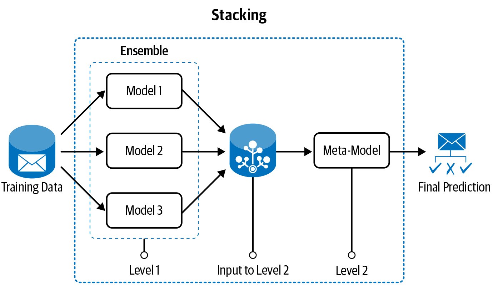
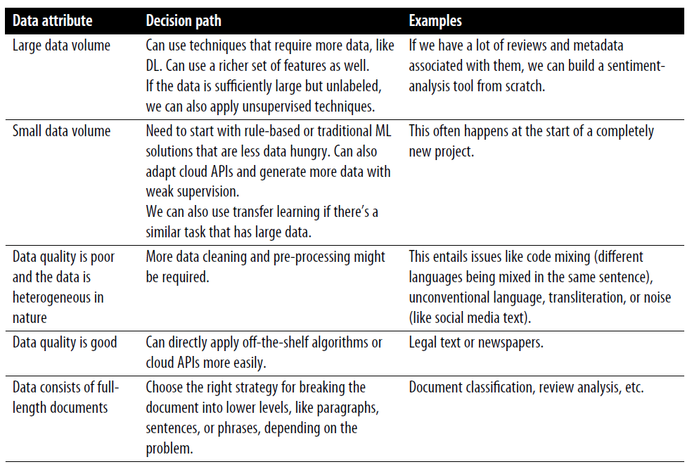

3.2 Modeling
Heuristics, classical models, and when to stack them.
1. Start with a rule you can write today
Modeling does not begin with a neural net. It begins with a decision you can ship.
Heuristics are rules a person wrote. A spam filter may already have a blacklist of domains and a list of words that almost always mean junk. Those rules are a model. They have precision you can measure. They also fail in the usual way: language moves, and a pile of rules becomes a system nobody can debug.
Use heuristics when you have little labeled data, when a stakeholder needs a first version, or when a pattern is cheap and stable (unsubscribe in the subject line).
Existing APIs (a vendor toxicity score, a cloud language API) are the same idea: a model you did not train, used as a baseline.
2. Then fit a model, and keep the rules as features
As you collect labels, a learned model usually beats a growing rule pile. Do not throw the rules away. Two honest ways to keep them:
Make a feature. The blacklist hit becomes a 0/1 column next to TF–IDF. The model learns how much to trust it.
Pre-process the input. Normalize URLs, mask emails, drop the signature block, then send the cleaned text to the classifier. The heuristic is now part of the pipeline, not a competing system.
If you keep adding if statements after the model, you are back to an unmaintainable rule base. Put the knowledge in features or in the input, then retrain.
3. Building “the” model is iteration
A first baseline (heuristic or Naive Bayes on counts) is required. Then you iterate until the thing is accurate and operable.
| Lever | What you change |
|---|---|
| Better features | Note 3.1: new counts, n-grams, embeddings |
| Ensemble / stacking | Combine several models |
| Transfer learning | Start from weights trained on a larger corpus |
| Re-apply heuristics | Catch the remaining systematic errors |
Stacking: train models that disagree in useful ways (a linear bag-of-words model and a small neural net). A second-stage model takes their scores as input and makes the call.

Transfer learning is the usual path once you leave classical features: a pre-trained language model, fine-tuned on your labels. It is still a modeling choice, not magic. If your data is tiny and unlike the pre-training domain, a linear model on good features can win.
4. Let the data pick the path
Volume and quality decide the strategy more than taste.
| Data you have | Sensible first model |
|---|---|
| Almost no labels, clear rules | Heuristics or a vendor API |
| Hundreds of clean labels | Linear model on handcrafted or TF–IDF features |
| Thousands of in-domain labels | Classical ML or a small neural net |
| Large labeled set, messy text | Deep model / transfer learning |
| Lots of unlabeled text, few labels | Pre-train or use the unlabeled text for embeddings; label what the model is unsure of |

“Production-ready” is part of the choice. A 2-point accuracy gain that cannot meet the latency budget is not an improvement. Note 3.4 is that constraint.
5. What “baseline” means here
Write the dummy first: majority class, or “always sales,” or “keyword refund → care.” Report its F1. Every later model has to beat that number, not a number from a blog.
Then one classical model (Naive Bayes or logistic regression on TF–IDF). Then, if you still need more and you have the data, an ensemble or a transferred net.
If the jump from dummy to TF–IDF is huge and the jump from TF–IDF to a transformer is 0.4 F1, stop. The labels or the extract are the problem (notes 2.1–2.2), not the architecture.
Keep a sheet: data size, features, model, intrinsic scores, latency. That sheet is the model. The .pkl file is just the current row.
6. Practice
-
Write one heuristic for the sales-vs-care router from note 2.1. Then say how you would turn it into a feature.
-
You have 400 labeled tickets and 200,000 unlabeled ones. What modeling path from the table do you take first?
-
Why can stacking two weak models beat either one, and when does it not?